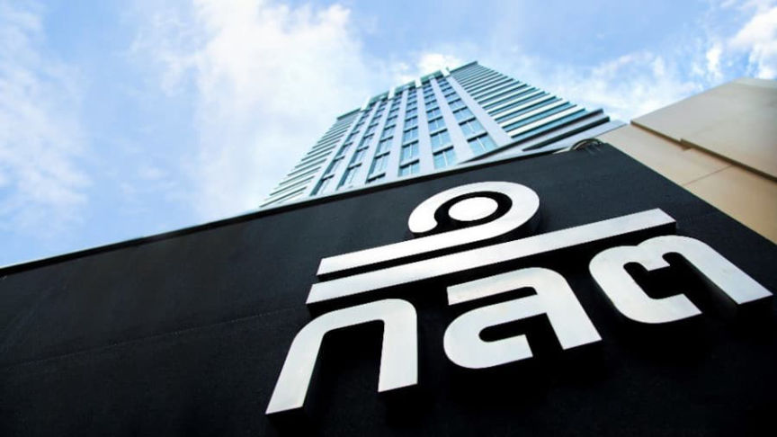
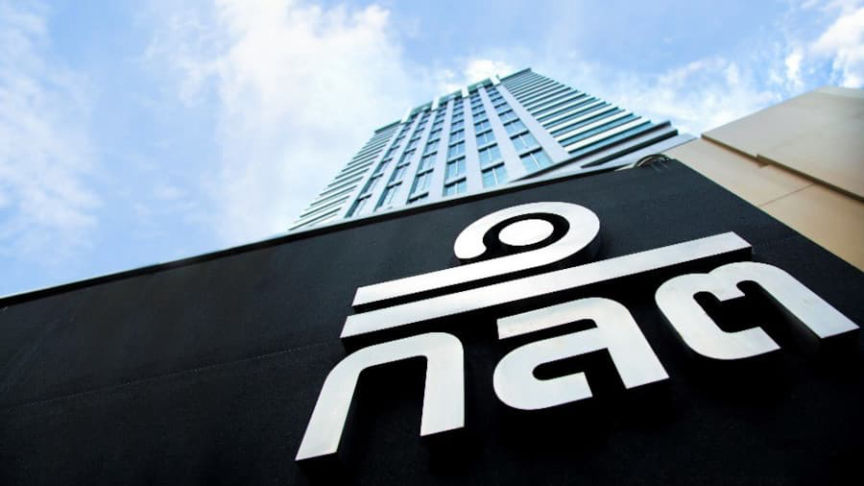

Thailand's SEC Bans Crypto Deposits and Lending
~2 min read | Published on 2022-09-15, tagged Cryptocurrency-Regulation, General-News using 494 words.
The Securities and Exchange Commission in Thailand has banned crypto companies from “providing or supporting deposit taking & lending services.”
According to the machine-translated press release, Thailand’s Securities and Exchange Commission (SEC) has banned “digital asset operators from providing or supporting digital asset depository services that pay returns to depositors and deposit taking & lending.” Coindesk reported that the ban applies to staking and lending services, such as Celsius Network and Babel Finance.

The language of the translated press release seemingly covers “deposit taking,” which seems like a function of most cryptocurrency exchanges and services.
Celsius Network and Babel Finance froze withdrawals earlier this year. The cryptocurrency exchange ZipMex, which operates in Thailand, also froze withdrawals in 2022. Thailand’s SEC filed a police complaint against ZipMex for failing to turn over transaction records by a deadline imposed by the SEC.
The SEC’s press release has been very roughly translated (DeepL does not translate Thai):
“The Office of the Securities and Exchange Commission (SEC) welcomes its opinions on the principle prohibiting digital asset operators from providing or supporting digital asset depository services that pay returns to depositors. and deposit taking & lending to protect traders and the public from service providers’ business risks.
According to the SEC in the meeting No. 12/2022 on September 1, 2022 approved the principle of prescribing rules prohibiting digital asset business operators to provide or support digital asset depository services. with the payment of returns to depositors and deposit taking & lending to protect traders and the general public from the risks of such transaction providers as well as to help reduce problems that may be misunderstood as a service that is regulated by a regulatory authority. until it may lead to damage to the people Because there is no supervision both at home and abroad. And at present, there are many foreign service providers who face liquidity problems that have to stop their services and suspend the withdrawal of digital assets of customers. supervise the matter The important things are as follows:
(1) Prohibit digital asset business operators Take deposit of digital assets and take deposited digital assets for loan or investment. and pay returns to depositors
(2) Prohibiting digital asset business operators Accepting digital assets by paying returns to depositors Even if such returns do not come from taking advantage of the digital assets deposited (for example, it may come from the promotional budget of the company or group companies, for example), unless it is a promotion in accordance with the rules prescribed by the Board of Directors. SEC announced the determination
(3) Prohibit advertising or soliciting the general public or doing any other act in the manner of supporting the deposit taking & lending services under (1) and (2) of the service provider or other persons, for example as a channel for customers. Foreign deposit taking & lending service providers can be used through the operator’s platform or application, for example.”
ก.ล.ต. เปิดรับฟังความคิดเห็นเกี่ยวกับการห้ามผู้ประกอบธุรกิจสินทรัพย์ดิจิทัลให้บริการหรือสนับสนุนการให้บริการรับฝากสินทรัพย์แบบ deposit taking & lending | www.sec.or.th, archive.is
According to the machine-translated press release, Thailand’s Securities and Exchange Commission (SEC) has banned “digital asset operators from providing or supporting digital asset depository services that pay returns to depositors and deposit taking & lending.” Coindesk reported that the ban applies to staking and lending services, such as Celsius Network and Babel Finance.

A sign for the Securities and Exchange Commission
The language of the translated press release seemingly covers “deposit taking,” which seems like a function of most cryptocurrency exchanges and services.
Celsius Network and Babel Finance froze withdrawals earlier this year. The cryptocurrency exchange ZipMex, which operates in Thailand, also froze withdrawals in 2022. Thailand’s SEC filed a police complaint against ZipMex for failing to turn over transaction records by a deadline imposed by the SEC.
The SEC’s press release has been very roughly translated (DeepL does not translate Thai):
“The Office of the Securities and Exchange Commission (SEC) welcomes its opinions on the principle prohibiting digital asset operators from providing or supporting digital asset depository services that pay returns to depositors. and deposit taking & lending to protect traders and the public from service providers’ business risks.
According to the SEC in the meeting No. 12/2022 on September 1, 2022 approved the principle of prescribing rules prohibiting digital asset business operators to provide or support digital asset depository services. with the payment of returns to depositors and deposit taking & lending to protect traders and the general public from the risks of such transaction providers as well as to help reduce problems that may be misunderstood as a service that is regulated by a regulatory authority. until it may lead to damage to the people Because there is no supervision both at home and abroad. And at present, there are many foreign service providers who face liquidity problems that have to stop their services and suspend the withdrawal of digital assets of customers. supervise the matter The important things are as follows:
(1) Prohibit digital asset business operators Take deposit of digital assets and take deposited digital assets for loan or investment. and pay returns to depositors
(2) Prohibiting digital asset business operators Accepting digital assets by paying returns to depositors Even if such returns do not come from taking advantage of the digital assets deposited (for example, it may come from the promotional budget of the company or group companies, for example), unless it is a promotion in accordance with the rules prescribed by the Board of Directors. SEC announced the determination
(3) Prohibit advertising or soliciting the general public or doing any other act in the manner of supporting the deposit taking & lending services under (1) and (2) of the service provider or other persons, for example as a channel for customers. Foreign deposit taking & lending service providers can be used through the operator’s platform or application, for example.”
ก.ล.ต. เปิดรับฟังความคิดเห็นเกี่ยวกับการห้ามผู้ประกอบธุรกิจสินทรัพย์ดิจิทัลให้บริการหรือสนับสนุนการให้บริการรับฝากสินทรัพย์แบบ deposit taking & lending | www.sec.or.th, archive.is